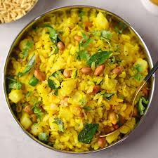

Poha

Description:
Poha is a delicious and light dish which is loved in central India and often eaten for breakfast.
It consists of light and fluffy steamed rice flakes cooked with spices and potatoes and peanuts.
It is eaten with fried Sev, or with cooked lentils called 'Usal'.
Poha is a really simple yet tasty and energising dish and can be prepared in a short amount of time.
Try it out and enjoy!
Ingredients:
- Poha (Dried flat-rice flakes)
- Peanuts
- Salt
- Some sugar
- Turmeric
- Fresh Coriander leaves
Steps:
- Wet the rice flakes with some water
- Place the rice flakes for steaming on an open pot/rice cooker
- While the rice flakes are steaming, cook the spices in a pot with some oil
- If you have added potatoes, ensure they are cooked along with the spices
- Add salt to the spices
- Once steamed, add the rice flakes to the spices and mix
- Serve hot with Sev, Usal, or by itself and enjoy!
Home